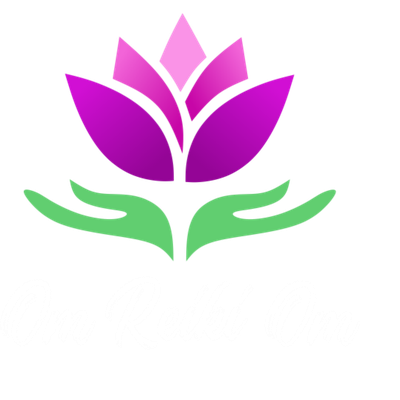

A confiança não vem do "dom". Vem da repetição com intenção. São 21 dias, de 5 a 10 minutos. O objetivo não é fazer bonito — é não quebrar a corrente. Se falhar um dia, retome no seguinte, sem culpa.
| Momento | O que fazer |
|---|---|
| Ao acordar | 3 respirações profundas + mãos no coração + 1 minuto de Reiki |
| Antes de dormir | Mãos no abdômen + 5 minutos de autotratamento |
| Durante o dia | Cho-Ku-Rei para energizar situações ou locais (a partir do Nível II) |
Cabeça · garganta · coração · plexo solar · abdômen · joelhos · pés. Respire fundo em cada posição e apenas observe as sensações.
Crie um espaço fixo de prática em casa: um cantinho com almofada, incenso, plantas — o que fizer sentido para você. O corpo aprende pelo lugar.
Marque um ✓ no dia em que praticou. Imprima esta página e deixe visível.
Autotratamento diário (5–10 min) + repetir mentalmente os 5 Princípios do Reiki.
Autotratamento + exercício das mãos (abrir e fechar as palmas, sentindo calor/magnetismo) + visualizar a energia fluindo.
Autotratamento + aplicar Reiki em outra pessoa, planta ou animal + registrar as sensações + compartilhar sua experiência com alguém.
Ao final de cada semana, pare cinco minutos e responda. É aqui que você percebe a evolução que o dia a dia esconde.
Ao terminar os 21 dias: não pare. Escolha o próximo ciclo — aplicar em mais pessoas, iniciar o registro de atendimentos, ou dar o passo para a primeira sessão cobrada.
O Reiki é uma técnica japonesa criada por Mikao Usui em 1922, reconhecida no Brasil como prática integrativa e complementar em saúde (PNPIC — Ministério da Saúde). Este material tem caráter educacional e não substitui diagnóstico, tratamento ou acompanhamento médico ou psicológico. Não prometa cura nem resultados a quem você atende.